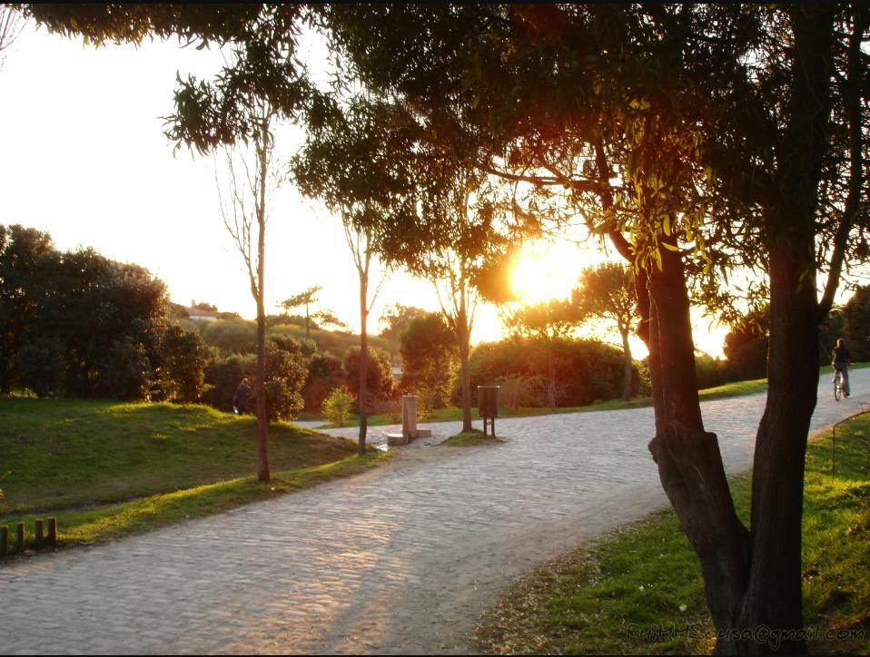

NOS Primavera Sound Porto will run from June 11 to 14 at Parque da Cidade, the festival's Portuguese home since 2012 and the first stop each year before the larger Barcelona edition opens a week later.
The 2026 bill is headlined by Gorillaz, Massive Attack and The xx, with IDLES, Big Thief, Ethel Cain, Bad Gyal, JADE, Kneecap and Slowdive among more than 55 artists confirmed across the festival's stages. General admission passes are priced at €180 plus fees, with VIP passes at €275.

Primavera Sound's Porto edition has grown steadily since it split off from the original Barcelona festival, drawing an increasingly international crowd to Parque da Cidade's riverside setting. The park's mix of open lawns and mature woodland gives the festival a different character to its Spanish counterpart, with multiple stages spread across the grounds rather than concentrated on a single site.
Editor's note: Image Media did not have a team on the ground for this event. The images above are file photographs from a previous edition of Primavera Sound Porto, sourced from Wikimedia Commons under Creative Commons licences, used here to illustrate the festival's setting rather than the 2026 lineup.